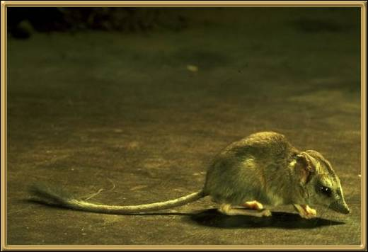

A tiny nocturnal predator with a long fluffy tail. It lives mostly in the central, arid regions of Australia. It is difficult to find, but considered to be relatively secure. 7-11cm (3-4.5 inches)
Photographer: unknown